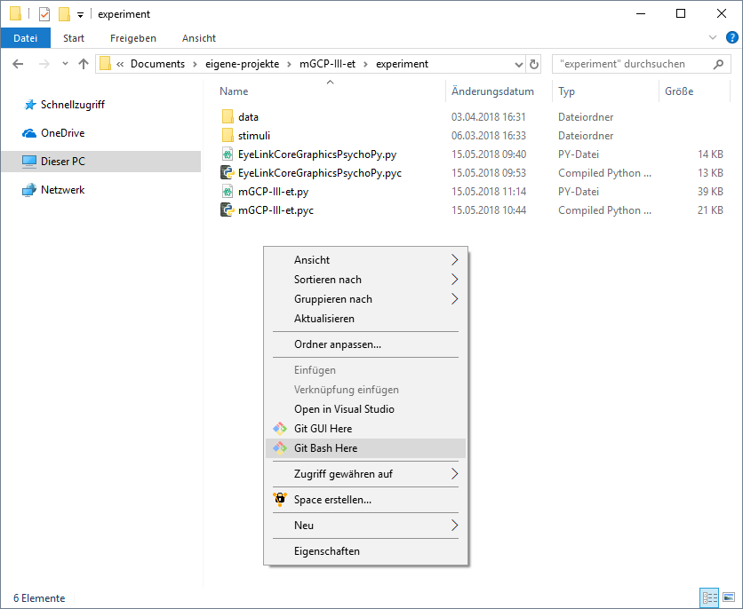
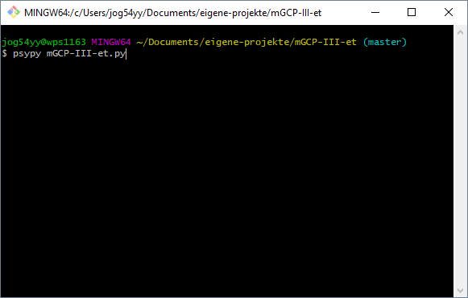

Ablaufplan für die Eyetracking-Studie "Multiple Gaze Cues"
Vor dem Experiment
- Stromleiste am PC hinter der Kammer anschalten
- beide PCs hochfahren
- auf dem linken PC läuft der Eyetracker und die Aufzeichnung der Eyetracking-Daten
- auf dem rechten PC läuft das Experiment (Präsentation der Stimuli) und die Aufzeichnung der Reaktionszeiten
- Benutzername: Stimulation
- Passwort: Mesa2014
- Stromleiste, Licht und Lüftung in der Kabine einschalten
- a) über die GUI
- PsychoPy2 auf dem Desktop des rechten PC mit Doppelklick auf
 öffnen
öffnen
- Datei öffnen (falls noch nicht geöffnet)

- über Open recent (s.o.)
- über Open... die Datei "mGCP-III-et**.py**" öffnen
- Datei mit Klick auf
 ausführen
ausführen
- b) über die Kommandozeile
- Zum Experiment Ordner "mGCP-III-et" navigieren
- Rechtsklick im Ordner, in dem die Datei "mGCP-III-et.py" liegt, und "Git Bash here" anklicken

- Öffnet ein Terminal am angegebenen Pfad
- Befehlt "psypy mGCPT-III-et.py" eingeben

- psypy ist ein Link (genauer: Alias für den Pfad) zum Program PsychoPy2
- Das Arguemnt mGCP-III-et.py wird mit dem verlinkten Programm ausgeführt
- Mit Enter Datei ausführen
- Probandennummer bei subject eintragen

- Beginnend mit 0 bei 1-9: 01, 02, ...
- Mit OK Experiment starten
- Blanko Bildschirm erscheint auf dem Bildschirm in der Kabine

- ??Eyelink starten
- Sample rate: 1k Hz, Tracking: centroid (Image display PC aus)
Proband
Proband begrüßen
- Instruktion: „Hallo und herzlich Willkommen zu unserer Studie. Wir freuen uns, dass Sie sich zur Teilnahme bereit erklärt haben.“
- „Untersuchung läuft“ Schild an die Türe hängen
- austeilen und unterschreiben lassen
- falls Proband Fragen hat, diese beantworten):
- Instruktion: „Bevor wir mit dem Experiment beginnen, teile ich Ihnen eine Probandeninformation aus, auf der Sie Informationen zum Ablauf der Studie finden. Ich bitte Sie, die Informationen aufmerksam durchzulesen und sich bei weiteren Fragen zu melden. Wenn Sie alles durchgelesen und verstanden haben, können Sie dies mit Ihrer Unterschrift auf der Einwilligungserklärung bestätigen.“
- eventuell Probandeninformation mündlich zusammenfassen
- im Falle einer Nachfrage, weshalb die Adresse angegeben werden muss darauf hinweisen, dass aufgrund fehlender Probandennummer sowieso keine Zuordnung erfolgen kann und Anonymität garantiert ist.
- Einwilligungserklärung in Ordner abheften
Voraussetzungen
- KEIN Augen-Makeup!
- Notfalls abschminken lassen.
- Überprüfen, dass Proband angenehm sitzt
- ggf. höhenverstellbaren Tisch anpassen
- NICHT dem Stuhl oder den Eyetracker verstellen
Experiment Starten
Eyetracker einstellen
- Sobald das
- Unmittelbar vor der Kalibrierung
- Schärfe am Eyetracker einstellen: über Hebel rechts am Tracker türkisfarbenen Punkt in Pupille möglichst klein einstellen
- Threshold der Software einstellen: Pfeiltaste links: Bildschirm wechselt von Auge auf Darstellung des gesamten Gesichts > auf „a“ drücken für Autothreshold (Falls Pupille mit Lid verschwimmt, über Pfeiltasten hoch/runter den Threshold manuell einstellen)
Hinweise an die Proband vor der Kalibrierung
- Lieber ein bisschen länger als zu kurz auf die einzelnen Fixationspunkte schauen
- Den Kopf nach Kalibrierung nicht mehr bewegen
- Nachfragen ob soweit alles verstanden wurde
- Türen lassen sich nicht verriegeln und von innen öffnen
- Sobald die Kalibrierung abgeschlossen ist, kann selbstständig das Experiment gestartet/ fortgesetzt werden
Kalibrierung
Türen der Kabine schließen
- Bis zum Ende des Blocks nicht mehr öffnen
Am PC in Eyelink auf Kalibrieren klicken
Auf Autotrigger klicken
Sind die entstehenden Kreuze in ordentlichen spalten > accept, wenn nicht nochmal kalibrieren
Validierung
Auf Validierung klicken
Auf Auto trigger klicken
Wenn unten rechts in Klammer „GOOD“ steht, dann Output/Record klicken zum Starten des Experiments
Instruktion erscheint auf dem Bildschirm des Probanden
Der Block beginnt mit dem ersten Trialcounter

3) Während des Experiments
- Signal beobachten: während den ersten beiden Spalten (VP sieht Fixationskreuz) sollten die beiden Linien parallel sein
- Entspricht der Baseline Messung
- Rote Balken sind Blinzler
- Blockende abwarten
- Trialcounter beachten

- Trial 96 ist der letzte Trial in Block 1
- Trial 192 ist der letzte Trial in Block 2
- Trial 288 ist der letzte Trial in Block 3
- Trial 384 ist der letzte Trial im Block 4
- Zwischen den Blöcken, vor jeder Neukalibrierung auch Autothreshold neu bestimmen
Nach dem Experiment
- Daten transferieren: (…)
- Checken ob Daten vorhanden und ausreichend groß
Probleme und deren Bewältigung
Datenverlust
Datenverlust ist quasi nicht möglich. Die Daten werden fortlaufend aufgezeichnet, selbst wenn der PC unmittelbar ausgeht, sollten die Daten weiterhin vorhanden sein, solange der Rechner danach wieder normal hochfährt.
Experiment neustarten
Das Experiment kann jederzeit an jedem beliebigen Block neugestartet werden. Dazu trägt man im ersten Dialogfenster unter block den Block ein, andem das Experiment wieder starten soll. Bei einem Absturz oder einer Unterbrechung immer mit dem nächsten Block beginnen.